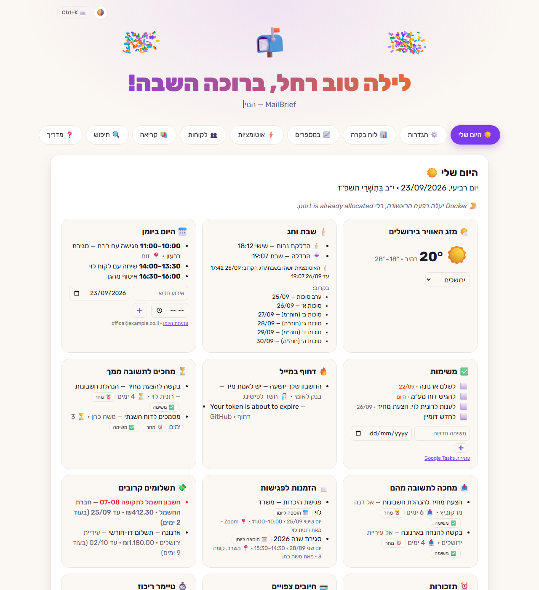
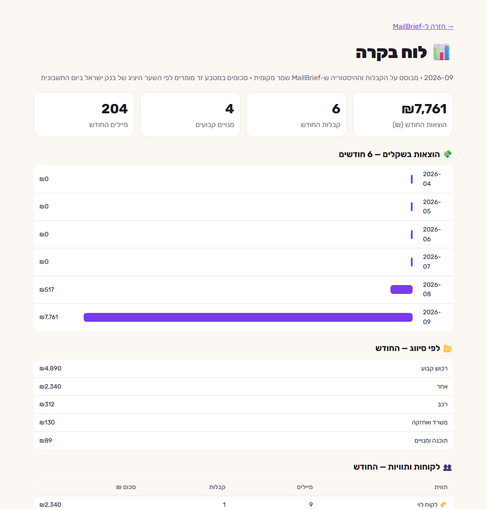

MailBrief
MailBrief
MailBrief
עוזר מייל שרץ על המחשב שלך: מה דחוף, מי מחכה לתשובה, קבלות לאקסל ואוטומציות — בלי AI, בלי ענן, והמייל לא יוצא מהמחשב.
או בשורת הפקודה: winget install mailbrief · חינם · Windows 10 / 11


מה הוא עושה
נפתח כשנכנסים למחשב: דחוף, מחכים לתשובה, יומן ומשימות, תשלומים קרובים וזמני שבת.
כל יום ראשון בבוקר — דוח אחד בעברית על כל מה שקרה בתיבות.
מייל אחרי מייל: בוצע, תזכורת, טיוטה, משימה, נודניק או תשובה — במקש אחד.
כל קבלה נשמרת לפי חודש, כולל סכומים מקבצי PDF, עם אקסל חודשי וחבילה לרו״ח.
שיחות ששלחת ואף אחד לא ענה — עם תזכורת בלחיצה.
כותבים עכשיו, נשלח אחרי שבת או בזמן שבחרת. ברכות אישיות לכל הלקוחות.
כל הניוזלטרים במקום אחד, וביטול מנוי בלחיצה.
התחזות לבנקים ולדואר ישראל, קישורים מטעים וקבצים מסוכנים — עם הסבר למה.
שום אוטומציה לא רצה מהדלקת נרות ועד הבדלה, לפי העיר שלך.
פרטיות — בקצרה
- MailBrief רץ רק על המחשב שלך. אין לו שרת, אין חשבון משתמש ואין איסוף נתונים.
- המייל עובר ישירות מ-Google / Microsoft / ספק הדואר אל המחשב שלך — ולא לשום מקום אחר.
- ההרשאות נשמרות מוצפנות במחשב, ואפשר לבטל אותן בכל רגע.
English
MailBrief is a free, open-source mail assistant for Windows. It connects to your mailboxes (Gmail, Microsoft, or any IMAP server) and runs entirely on your computer: a weekly brief, a "My day" page, receipts to Excel, reminders for unanswered mail, scheduled mail, rule-based automations and phishing warnings. There is no AI and no MailBrief server — your mail goes only from your mail provider to your own computer.
Download for Windows · Privacy policy · Terms of use · Source code